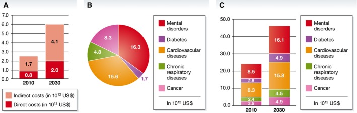

Did you know?
People with severe mental health conditions die prematurely – as much as two decades early – due to preventable physical conditions. [1]
People with mental health conditions often experience severe human rights violations, discrimination, and stigma. [2]
Many mental health conditions can be effectively treated at relatively low cost, yet the gap between people needing care and those with access to care remains substantial. Effective treatment coverage remains extremely low. [3]
Expected Future Trends
From 2007 to 2017, there has been a 13% rise in mental health conditions and substance use disorders.
[4]
Continuing at this trend, mental illnesses will only become more prevalent. Mental illnesses may also be a much more serious issue than what is currently known, due to the stigma around it.
In simpler terms, it is because people talk bad about those who go into therapy, and therapy is seen as for those who are insane or having something seriously wrong with them.
However, this is very normal, and therapy is something for everyone, and not just for those who are "insane."
Impacts on Daily Life
Mental health conditions can have a substantial effect on all areas of life, such as school or work performance, relationships with family and friends and ability to participate in the community. [5]
Two of the most common mental health conditions, depression and anxiety, cost the global economy US$ 1 trillion each year.
[6]
 [7]
[7]

[8]
Why is it such a big deal?
Suicide is the 18th leading cause of death globally and is the 2nd leading cause of death for people ages 15-29.
At the current suicide rates, 1 person commits suicide every 40 seconds.
[9]
Even more severe, there are indications that for each adult who died by suicide there may have been more than 20 others attempting suicide.
[10]
 [11]
[11]
 [12]
[12]
What is the World Health Organization(WHO) doing about it?
WHO works with Member States and Partners to improve the mental health of individuals and society at large.
1. Promotion of mental well-being
2. Prevention of mental disorders
3. Efforts to increase access to quality mental health care that respects people’s human rights.
[13]
In 2019, WHO launched the WHO Special Initiative for Mental Health (2019-2023).
[14]
References
World Health Organization. (n.d.). Mental health. Retrieved April 29, 2021
-https://www.who.int/health-topics/mental-health#tab=tab_1[1][2][3]
-https://www.who.int/health-topics/mental-health#tab=tab_2[4][5][6]
-https://www.who.int/health-topics/mental-health#tab=tab_3[13]
Trautmann, S., Rehm, J., & Wittchen, H. (2016, September). The economic costs of mental disorders: Do our societies react appropriately to the burden of mental disorders? Retrieved April 29, 2021
-https://www.ncbi.nlm.nih.gov/pmc/articles/PMC5007565/figure/embr201642951-fig-0001[7]
-https://www.ncbi.nlm.nih.gov/pmc/articles/PMC5007565/figure/embr201642951-fig-0002[8]
World Health Organization. (n.d.). Suicide data. Retrieved April 29, 2021
-https://www.who.int/teams/mental-health-and-substance-use/suicide-data[9][10]
World Health Organization. (n.d.). GHO | World Health Statistics data visualizations dashboard | Suicide. Retrieved April 29, 2021
-https://apps.who.int/gho/data/node.sdg.3-4-viz-2?lang=en[11]
World Health Organization. (2019). World Health Statistics 2019. Retrieved April 29, 2021
-https://apps.who.int/iris/bitstream/handle/10665/324835/9789241565707-eng.pdf?ua=1#page=43[12]
World Health Organization. (n.d.). The WHO Special Initiative for Mental Health (2019-2023):
Universal Health Coverage for Mental Health. Retrieved April 29, 2021
-https://apps.who.int/iris/bitstream/handle/10665/310981/WHO-MSD-19.1-eng.pdf?sequence=1&isAllowed=y[14]